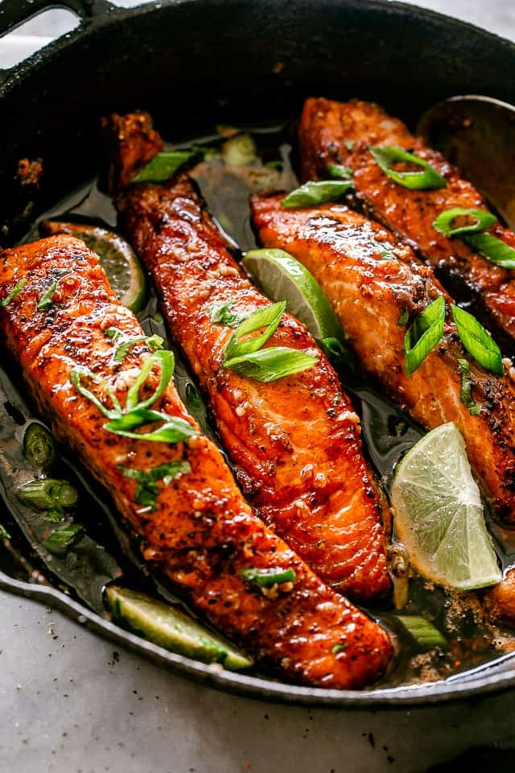

Salmon

Description
This Honey Garlic Sauce Salmon recipe makes crispy & tender salmon that's
SO DELICIOUS! This is one of my favorite ways to pan-fry salmon fillets.
One pan, 20-minutes, and a handful of ingredients stand in the way of you
and this incredible salmon dinner.
A simple sauce prepared with honey, soy sauce, garlic and lime juice adds
a ton of flavor to this simple salmon recipe. Quick, easy, and super
addictive, this tasty fish is perfect for a busy weeknight, but fancy
enough for an elegant dinner.
Ingredients
- Salmon Fillets
- Broccoli
- Garlic
- Butter
- Brown Sugar
- Dried Herbs
- Salt and Black Pepper
- Lemon
-
We start with seasoning our fillets; I use a mix of ground cumin,
paprika, garlic powder, Italian Seasoning, salt and pepper.
-
Add the fillets to warm oil in a cast iron skillet. If you do not have a
cast iron skillet, use any other heavy steel pan that you do have.
-
Cook the fillets for around 4 to 5 minutes, or until cooked three
quarters of the way. Flip over.
-
Add butter, minced garlic, honey, soy sauce, and lime juice. Cook for 2
more minutes, or until cooked through and sauce is thickened.
Home